地政学
タリンはフィンランド湾とバルト海東岸を見張る首都で、北欧、EU、NATO、ロシア圏が交差します。小国の政治中枢であり、港、海底ケーブル、サイバー防衛、ウクライナ支援が安全保障と結びつきます。国境感覚も鋭い街です。
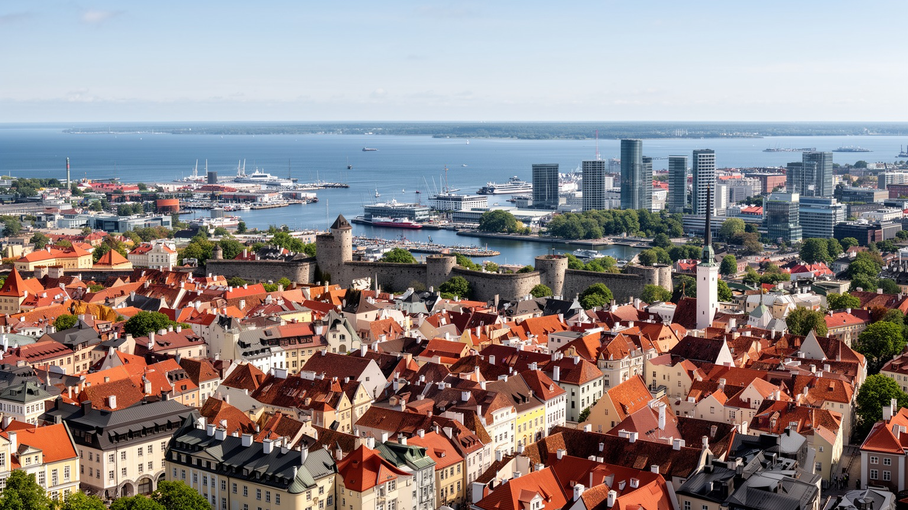
🇪🇪 エストニア共和国 / 首都 / World City Atlas
フィンランド湾の南岸に立つ小さな首都です。中世ハンザ都市の旧市街、港湾、電子政府、IT企業、ロシア語圏の住宅地、NATOのサイバー防衛、北欧との日常的な航路が一つに重なります。
都市の骨格
タリンはフィンランド湾に面し、ヘルシンキとのフェリー、港湾、空港、鉄道、旧市街、団地、大学、スタートアップ地区が近い距離で接続します。中世の石畳と電子行政の画面が同じ首都の日常を作ります。
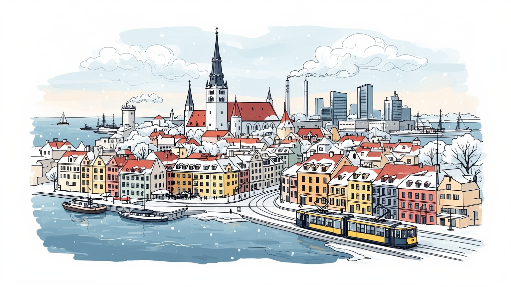
タリンはフィンランド湾とバルト海東岸を見張る首都で、北欧、EU、NATO、ロシア圏が交差します。小国の政治中枢であり、港、海底ケーブル、サイバー防衛、ウクライナ支援が安全保障と結びつきます。国境感覚も鋭い街です。
雇用は行政、IT、金融、港湾、物流、観光、教育、医療、建設に広がります。電子政府の評判が高い一方、清掃、接客、配送、港湾作業、介護も都市を支え、賃金差と住宅費が働く人の選択を左右します。技能の幅も広いです。
ルター派、正教会、旧市街の教会、ロシア語圏の記憶、歌の祭典、映画、デザイン、大学が重なります。エストニア語の公共空間と多言語の生活が並び、独立回復の記憶が文化行事にも深く残ります。祈りも歌も街を支えます。
住民はトラム、バス、海辺、団地、旧市街、港、森に近い住宅地を使い分けます。観光客は世界遺産の旧市街、城壁、港、市場へ向かいますが、冬の暗さ、家賃上昇、短期滞在、言語の距離も現実です。生活も旅も近い街です。
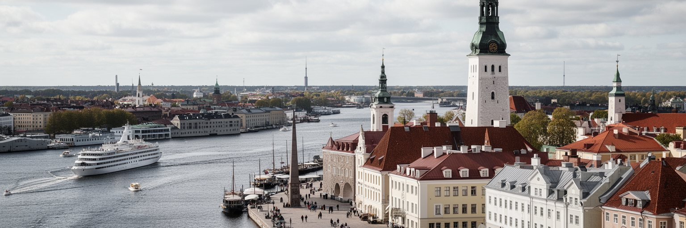
タリンの第一の特徴は、フィンランド湾の南岸にある距離感です。地図では小国エストニアの首都ですが、海を挟んでヘルシンキまで約八十キロの近さにあり、フェリーで通勤、買い物、観光、商談、親族訪問が行き来します。湾は都市を隔てる境界ではなく、北欧の労働市場、港湾物流、観光、教育、技術交流へ開く回廊です。同時に、バルト海東岸はロシア、北欧、ドイツ、ポーランド、バルト三国の安全保障が重なる場所でもあります。タリン港、旅客ターミナル、旧市街の丘、海辺の再開発地、ソ連期の住宅地は、海を向いた首都の異なる顔を示します。港は観光客の入口であり、物流とエネルギーの結節点であり、海底ケーブルや航路の安全を意識する場所です。街の規模は大きくありませんが、海に近い行政、大学、企業、外交機関が集中するため、国の外向きの機能が高密度で集まります。冬の暗い海、夏の長い夕方、港を出入りする船、石灰岩の崖と城壁は、タリンの地政学を日常の風景に変えています。ここでは都市を陸の中心だけでなく、海上の距離と通信の線から読む必要があります。湾の向こうの北欧と東の緊張を同時に意識することが、タリンの現代的な感覚を形作っています。小さな港の予定表やフェリーの混雑にも、労働と外交と家族の移動が読み取れます。海辺の天気も判断を変えます。
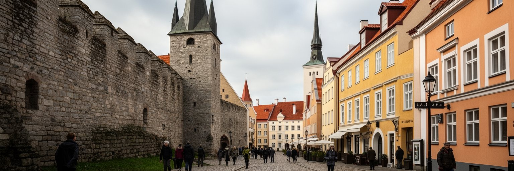
タリン旧市街は、北欧とバルト海の中世都市を読むうえで非常に密度の高い場所です。城壁、塔、石畳、教会、市庁舎広場、商人の家並みは、ハンザ交易の時代にこの港が穀物、塩、毛皮、木材、工芸品を動かした歴史を伝えます。丘の上のトームペアは権力と防衛の場所で、下町は商業と職人の空間として発展しました。現在は世界遺産の観光地であり、ホテル、レストラン、土産物店、博物館が集中しますが、旧市街を単なる絵はがきとして見ると、都市の複雑さを見落とします。デンマーク、ドイツ騎士団、スウェーデン、ロシア帝国、ソ連、独立エストニアの支配と記憶が重なり、同じ石壁が何度も異なる政治の中で使われてきました。観光客にとって旧市街は歩きやすい迷路ですが、住民にとっては住宅費、騒音、短期賃貸、冬の維持費、住民向け商店の減少という課題もあります。中世の美しさを守るには、壁や屋根を保存するだけでなく、生活都市としての使い方を調整する必要があります。タリンの旧市街は、北欧的な清潔さとドイツ語圏の商業記憶、ロシア帝国の影、エストニア独立の象徴が一つの徒歩圏に圧縮された場所です。石畳を歩くことは、観光であると同時に、海に開いた小国が何度も帰属を変えながら都市を保ってきた時間を読むことです。夜の静けさや冬の除雪も、保存地区を生きた街にするための現実的な仕事です。
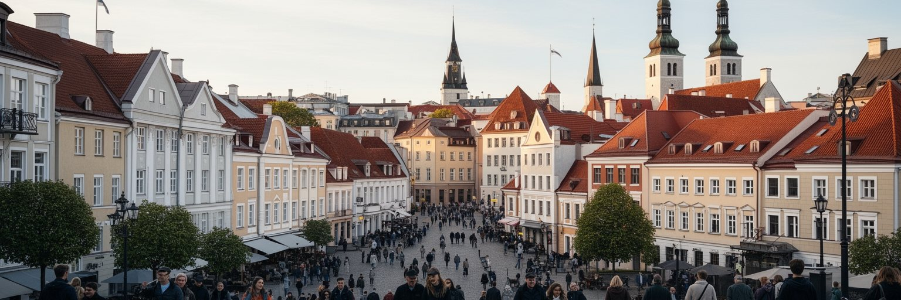
タリンは、電子政府とスタートアップの首都として国際的に知られています。エストニアでは行政手続き、電子ID、税務、会社設立、医療情報、学校連絡などがデジタル化され、首都には政府機関、IT企業、大学、研究機関、国際人材が集まります。SkypeやWiseに象徴される起業文化は、英語で働く若者、海外から戻った専門職、バルト海を越えた投資、EU市場へのアクセスを結びました。ただし、デジタル国家は画面の便利さだけで成立しているわけではありません。サーバー、通信網、法制度、本人確認、教育、サイバー防衛、個人情報への信頼、行政窓口にアクセスしにくい人への支援が必要です。タリンのIT地区や共同オフィスは明るい未来像を見せますが、低賃金のサービス労働、ロシア語話者や高齢者のデジタル格差、住宅費の上昇も同じ都市にあります。電子行政が生活を軽くする一方で、使える人と使えない人の差を広げない設計が求められます。企業の成長は高技能職を増やしますが、清掃、警備、配送、飲食、保育、医療、公共交通の仕事なしに都市は動きません。タリンをデジタル首都として読むなら、アプリの使いやすさだけでなく、制度への信頼、技術者の教育、移民人材の受け入れ、サイバー攻撃への備え、社会的包摂を一緒に見る必要があります。小さな国だからこそ、技術の成功と社会の弱点が近い距離で現れます。
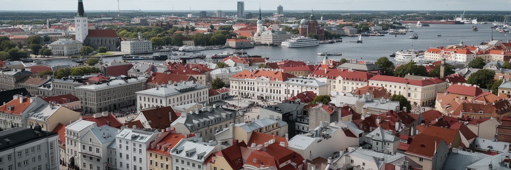
タリンの安全保障は、港や軍事施設だけでなく、データと通信の世界にも深く入り込んでいます。エストニアはNATOとEUの一員であり、首都にはサイバー防衛に関わる国際的な機関や専門家が集まります。二〇〇七年の大規模なサイバー攻撃は、行政、銀行、メディア、通信が攻撃対象になる現代の脆さを強く意識させました。その経験は、電子政府を進める国にとって、防御、冗長性、国際協力、法制度、専門人材の育成を不可欠なものにしました。ウクライナ戦争以降、偽情報、電力網、海底ケーブル、衛星通信、港湾システム、選挙への干渉は、タリンの日常的な政治課題になっています。住民が普段使う銀行アプリ、公共サービス、交通カード、病院の記録も、国家の安全保障と切り離せません。サイバー都市としてのタリンは、華やかな技術都市であると同時に、攻撃される前提で制度を組み立てる都市です。安全を守るには、専門家だけでなく、市民のメディアリテラシー、学校教育、多言語の情報提供、緊急時の連絡手段が重要です。ロシア語話者を含む多様な住民に信頼できる情報が届かなければ、分断は安全保障上の弱点になります。タリンのサイバー防衛は、コードの問題であると同時に、社会の信頼をどう維持するかという政治の問題です。小国の首都は、データの守り方を通じて二十一世紀の都市の脆さと強さを示しています。
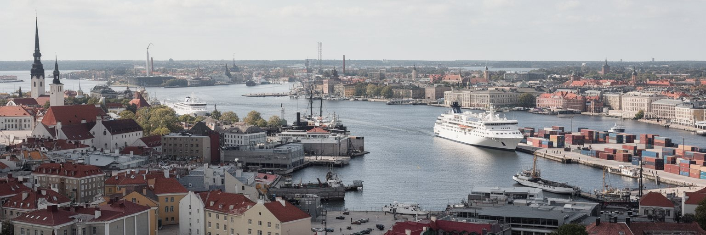
タリンの港湾経済は、観光フェリーの明るい印象より広い役割を持ちます。旅客ターミナルにはヘルシンキやストックホルム方面の船が発着し、週末旅行、通勤、商談、買い物、移民労働、留学を支えます。貨物港はコンテナ、車両、燃料、建材、食品、郵便、産業部品を扱い、エストニア経済を北欧と欧州の供給網へ接続します。港で働く人は、荷役、整備、清掃、警備、通関、船舶サービス、飲食、交通案内、物流管理など多様です。IT企業の都市というイメージが強くても、実際の都市は船、倉庫、道路、トラック、バス、タクシー、ホテル、修理工場によって動きます。港湾周辺では海辺の再開発も進み、住宅、オフィス、文化施設、散歩道が増えています。これは水辺を市民へ開く機会ですが、地価上昇、観光客向け消費、交通混雑、港湾機能との衝突も生みます。港は都市を外へ開く装置である一方、外部の景気、制裁、燃料価格、戦争、感染症、海上安全の影響を直接受けます。タリンの経済を読むには、スタートアップの会議室と、早朝のフェリー、港湾作業、旅客の列、倉庫の冷たい空気を同じ地図に置く必要があります。海は観光の背景ではなく、労働と物流と安全保障の現場です。北欧への近さは魅力であり、同時に競争と依存の関係でもあります。港の変化は、街の雇用、宿泊価格、交通量にもすぐ反映されます。
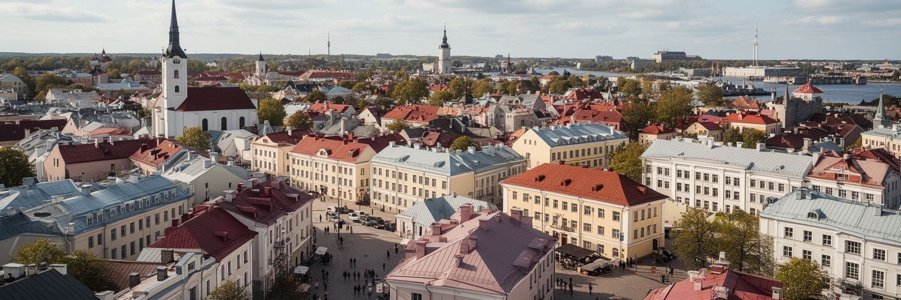
タリンを理解するには、エストニア語の国家首都であることと、ロシア語が広く聞こえる都市であることを同時に見る必要があります。ソ連期の移住と工業化は、ラスナマエやムスタマエなどの住宅地に大きな人口変化をもたらし、現在もロシア語話者、ウクライナ系、ベラルーシ系、フィンランド系、国際的なIT人材が暮らします。言語は買い物や職場の便利さだけでなく、学校、市民権、メディア、政治的信頼、歴史認識、就職機会に関わります。エストニア語教育の強化は国家の統合に重要ですが、家庭で使う言葉を持つ人が排除感を抱かないよう、支援と説明が必要です。ウクライナ戦争以降、ロシア語の公共性、記念碑、情報源、安全保障への視線はさらに敏感になりました。タリンでは、同じバスやスーパーを使う人びとが、異なるニュース、家族史、宗教、戦争への感情を抱えている場合があります。都市の安定は、単に一つの言語へそろえることではなく、共通の制度と相互の信頼を作ることにあります。学校、図書館、地域センター、医療、行政窓口、労働市場が橋渡しの場になります。多言語社会の課題は、観光客が旧市街で見る中世の景観より見えにくいですが、タリンの現在を左右する核心です。言語の距離を縮めることは、政治の分断を防ぎ、子どもが将来を選べる幅を広げることにつながります。
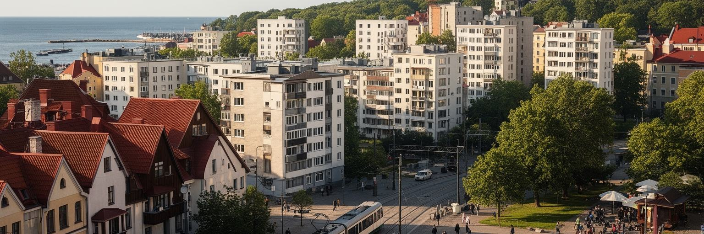
タリンの都市形態は、城壁に囲まれた旧市街だけでは語れません。中心部の周囲には木造住宅の地区、ソ連期の大規模団地、港湾、工業跡地、大学、森に近い住宅地、海辺の新開発が広がります。ラスナマエは大きな集合住宅地として、ロシア語話者の生活、通勤、学校、商業施設、公共交通を支えてきました。ムスタマエやオイスマエにもソ連期計画の記憶が残り、エレベーター、断熱、暖房、公共空間、駐車場、歩行安全の改修が生活の質を左右します。一方でカラマヤやテリスキヴィ周辺では、木造住宅と工場跡がカフェ、ギャラリー、オフィス、住宅へ変わり、若い世代や観光客を引きつけています。こうした再生は都市を活気づけますが、家賃上昇と住民の入れ替わりも起こします。海辺の再開発は、かつて閉じられていた港湾や軍事的空間を市民へ開く機会です。しかし高価格住宅だけが増えれば、海は公共財ではなく限られた人の景観になります。タリンは小さな首都なので、旧市街、港、団地、森、海が比較的短い移動でつながります。この近さは魅力であると同時に、観光、通勤、住宅、自然保護、港湾機能の利害を衝突させます。都市をよくする鍵は、歴史地区の保存と新築の質、団地改修、公共交通、歩ける水辺、手頃な住宅を一体で考えることです。子どもの遊び場や高齢者のベンチも、都市形態の評価に欠かせません。
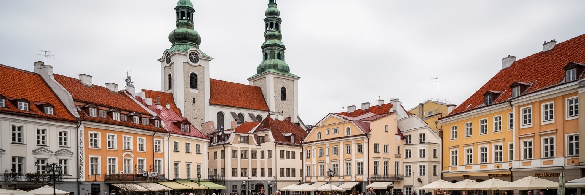
タリンの文化は、教会の尖塔と合唱の記憶からも読み取れます。旧市街にはルター派の教会、正教会、大聖堂、かつての商人や職人の信仰空間が残り、宗教は観光名所である前に、都市の時間を区切ってきた制度でした。エストニア社会は欧州の中でも世俗化が進んだ国として知られますが、祈りの場所は歴史、共同体、葬儀、祝祭、少数派の記憶を支えています。特に歌の祭典に象徴される合唱文化は、エストニア語、独立回復、国民意識と深く結びつきます。大勢の人が同じ歌を共有する経験は、政治的な宣言より柔らかく、しかし強く共同体を作ります。タリンの劇場、音楽学校、映画祭、デザイン、現代美術、大学文化も、旧市街の観光イメージを超えて都市を動かします。ロシア語圏の文化、ウクライナ避難民の活動、国際的なIT人材のイベントも加わり、文化の現場は多層です。文化政策が中心部の華やかな催しだけを支えると、住宅地の図書館、地域センター、学校の音楽教育、若者の練習場所は弱くなります。タリンの文化の強さは、大規模な祭典と日常の小さな活動がつながるところにあります。教会の鐘、合唱の声、冬の映画館、夏の野外イベントは、政治に揺れる小国で人びとが言葉と記憶を保つ方法です。文化は観光資源である前に、都市の自信を育てる生活の基盤です。地域の小さな稽古場も、その自信を次の世代へ渡します。
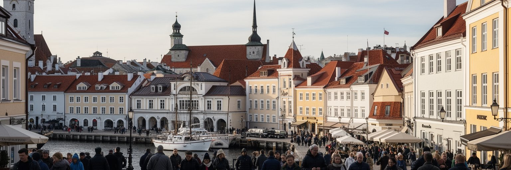
タリン観光の中心は、世界遺産の旧市街、トームペアの眺め、市庁舎広場、城壁、教会、港からの短い散策です。夏にはクルーズ客とフェリー客が増え、冬にはクリスマスマーケットが強い魅力になります。旅行者は中世の景観、北欧的なカフェ、デザイン店、サウナ、海辺の散歩、市場、博物館を楽しめます。しかし観光の成功は、住民の日常と摩擦も生みます。旧市街では短期賃貸、騒音、土産物店化、価格上昇が起こりやすく、港周辺では大型バス、タクシー、歩行者、貨物交通が交差します。観光に依存しすぎると、感染症や戦争不安、燃料価格、航路の変化に都市経済が揺れます。タリンにとって大切なのは、旧市街を美しい舞台として消費するだけでなく、住民が暮らし続けられる都市として管理することです。博物館やガイドが戦争、ソ連期、独立回復、多言語社会を丁寧に伝えれば、観光は浅い写真消費を超えます。観光収入が清掃、公共交通、文化財保全、地域商店、若いガイド、冬季の雇用へ届く仕組みも重要です。タリンは歩きやすく、初めての旅行者にも理解しやすい都市ですが、そのわかりやすさの下に、住宅費、季節労働、言語、港湾機能、文化財管理の調整があります。旅の魅力と生活の安定を同時に守れるかが、観光都市としての成熟を決めます。観光の静かな季節をどう支えるかも重要です。
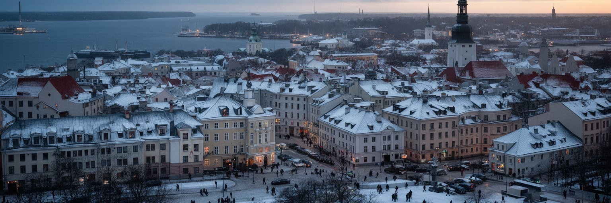
タリンの暮らしは、北の気候と強く結びついています。夏は涼しく日が長く、海辺、テラス、公園、旧市街の散策が気持ちよい季節になります。一方で冬は暗く、風が冷たく、凍結した歩道、雪、湿気、暖房費が生活の負担になります。気候は観光の背景ではなく、住宅の断熱、公共交通の信頼性、通学路の安全、高齢者の外出、港湾作業、建設時期、電力需要を決める条件です。ソ連期団地の改修では、外壁断熱、窓、暖房設備、エレベーター、共有部の維持が重要です。海に面する都市として、高潮、嵐、沿岸の浸食、排水、海辺再開発の安全も無視できません。気候変動は冬の寒さをなくす単純な変化ではなく、雨や凍結の増加、極端な気象、港湾や道路の管理費を通じて都市に現れます。緑地、街路樹、公園、森に近い住宅地は、夏の快適さだけでなく、水を受け止める都市の装置でもあります。タリンの小さな規模は、歩ける距離と自然への近さを与えますが、雪の日や暗い夕方には、照明、除雪、バス停の屋根、段差の少なさが生活の質を大きく左右します。北の都市としての良さは、景観の美しさだけでなく、厳しい季節でも学校、仕事、買い物、医療へ行ける安心にあります。気候を前提にした設計が、タリンの日常を静かに支えています。冬を我慢だけで終わらせない公共空間づくりが、街への愛着を強めます。
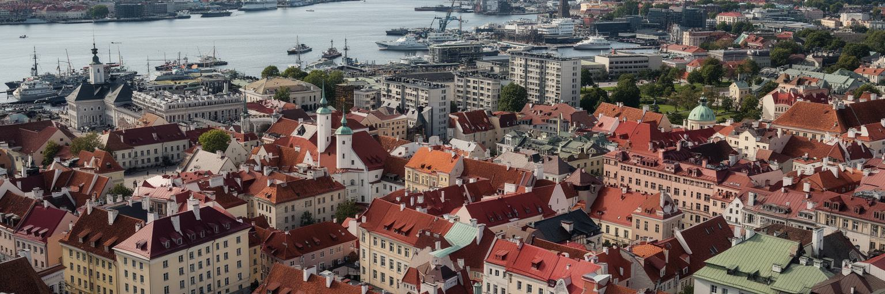
タリンは人口規模だけで見れば小さな首都ですが、現代都市を読む論点が驚くほど濃く集まっています。中世旧市街とハンザ交易、フィンランド湾の航路、電子政府、スタートアップ、NATOのサイバー防衛、ロシア語圏の住宅地、独立回復の記憶、歌の文化、海辺再開発、冬の生活設計が、短い移動距離の中でつながります。巨大な金融都市のような量はありませんが、小国の制度、技術、記憶、安全保障、観光、日常が互いに近いため、都市の変化が社会の選択として見えやすい場所です。タリンの強みは、旧市街の保存だけでも、IT企業の成功だけでもありません。石畳を歩く観光客、フェリーで北欧へ向かう労働者、電子IDを使う市民、ロシア語で話す家族、団地を改修する住民、歌の祭典に参加する人、サイバー攻撃に備える専門家が同じ首都を共有している点にあります。その共有を続けるには、手頃な住宅、多言語の教育、公共交通、文化財保全、港湾機能、デジタル包摂を同時に扱う必要があります。タリンを読むことは、過去の城壁と未来のコードを対立させることではありません。むしろ、歴史に守られた小さな首都が、海とデータと記憶を使ってどのように自立を保つのかを考えることです。タリンは周縁ではなく、バルト海の二十一世紀を日常の距離で見せる都市です。小ささは弱さだけでなく、制度の結果を市民が確かめやすい近さにもなります。